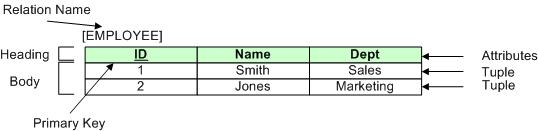

Relational Model
Relational Model is the theoretical foundation of a relational database. It was introduced by E.F. Codd in 1970 to store and process data in a less restrictive manner, which were weaknesses of the database models that preceded it.
By following the concept of relation in set theory, the relational model “provides the ability to relate records as needed rather than predefined when the records are first stored in the database” (Oppel, 2004). The relational model's logical schema and two-dimensional structure enable the interpretation of interrelated information.
Using a relational database is beneficial because it is flexible, reduces redundancy and eases backup and recovery. The fact that databases based on the relational model are some of the most prominent and widely used types of databases today also make this model worth studying.
Data Strucutre
- Key Terms
- Relation The relation is what the table represents. Diranieh (2015) interchanges table with the term with entity, which is an instance of a table type. According to Ramakrishnan and Gehrke (n.d.), a relation is made up of an instance and a schema. These parts are represented by the heading and the body, as seen in the image above. The instance is the body and the schema is the heading. The instance is a tuple or a pair of attribute-value pairs. The schema specifies the name of the relation (i.e., Relation Name) and the attribute-domain pairs.
- Attribute “An attribute is used to define the record and the record contains a set of attributes” (Wyatt, 2013). It is represented by the column; a unit of storage that can contain values. “Every relation must have a primary key, that is a set of attributes that uniquely identify every tuple of the relation” (The University of Udine, n.d.). The number of attributes in a relation is called a degree. The domain is a set of values a column is allowed to contain.
- Tuple A tuple is a row of values. It is also known as a record and the instance of a relation. The number of tuples determine the cardinality of a relation.
- Normalization Normal forms are structures that promote consistency and limit data redundancy. Normalization keeps information stored in strictly one place by splitting tables that contain redundant information. The normal forms were already discussed in Module 1, but you're free to watch the video below if you want to watch another demonstration of the normalization process.

Data Integrity
To ensure the validity of the data in a relational model, one must understand the underlying mechanisms behind it. According to Diranieh (2015), those mechanisms are attribute integrity, entity integrity and referential integrity, which is a combined summary of properties and constraints.
- Properties According to Rackspace Technology, Inc. , a relational table has six properties:
- Values are atomic
- Column values are of the same kind
- Each row is unique
- The sequence of columns is insignificant
- The sequence of rows is insignificant
- Each column must have a unique name
- Constraints Constraints maintain the integrity of the relational model by subjecting all relations to a condition. There are different kinds of constraints, but it has three main categories: constraints inherent to the data model, constraints that can be directly expressed in schemas, and constraints that cannot be directly expressed in schemas (Raju, 2004).